While practical applications of machine learning are ubiquitous, the theoretical and philosophical foundations of machine learning are lagging behind.
Core concepts like interpretability, generalization, robustness, uncertainty, overfitting, benchmarks, etc. are often only vaguely defined.
However, without precise definitions and conceptual foundations, machine learning will remain engineering and not become a real science.
Worse still, it will not become a reliable tool for either scientific or industrial applications.
The goal of my research is to address these fundamental challenges.
My approach combines philosophical conceptual analysis with rigourous mathematical modeling.
I consider myself a mediator between disciplines: I am a philosopher close to machine learning practice, and a philosophically inclined AI researcher;
but faculty lines are so 20th century anyway. You can find all my research on
my Google Scholar profile.
I have worked on the following research projects:
- Supervised Machine Learning for Science: In this book,
Christoph Molnar and I explore how machine learning is changing science, what kinds of scientific questions it does (not) allow to address, and how we can integrate
domain knowledge, uncertainty quantification, and interpretability to make machine learning a proper scientific tool.
- Dear XAI Community, We Need to Talk! : In this paper,
Gunnar König and I discuss fundamental misconceptions in current XAI research. For example, many XAI techniques are proposed without a clear purpose.
We think that if these misconceptions are not resolved, XAI will not become a mainstay in machine learning.

-
Scientific Inference with Interpretable Machine Learning : In this paper,
Gunnar König, Christoph Molnar
, Alvaro Tejero-Cantero and I discuss how interpretable machine learning can be turned into a tool for scientific inference.
We show that properties that were represented by interpretable parameters in traditional models,
can be represented in machine learning models by summary statistics of model behaviour, we call them property descriptions.
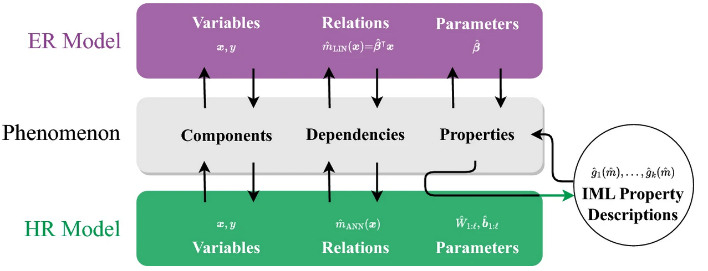
-
Relating the Partial Dependence Plot and Permutation Feature Importance to the Data Generating Process : In this paper,
Gunnar König, Christoph Molnar, others, and I apply partial dependence plots and permutation feature importance directly
to the data-generating mechanism. We analyze and quantify the deviations between these ground-truth values and those obtained by applying the same methods to a trained machine learning model.
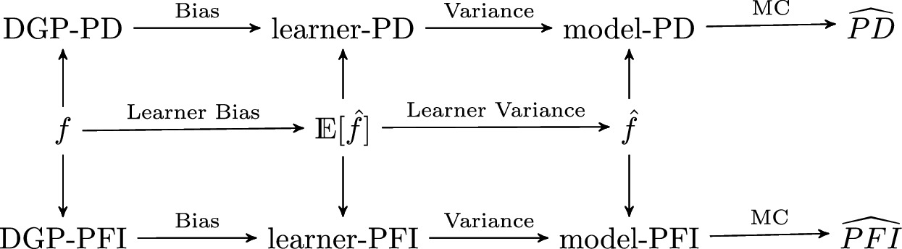
-
A Theory of Robustness in Machine Learning : In this paper,
Thomas Grote and I show how different conceptions of robustness in machine learning can be unified. We describe robustess as the
relative stability of a robustness target with respect to specific interventions on a modifier.
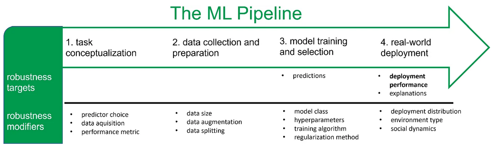
-
Improvement-focused causal recourse : In this paper,
Gunnar König, Moritz Grosse-Wentrup and
I argue that the
current implementations of counterfactual explanations show users how they can trick the machine learning system. We show how causal knowledge helps to avoid this by
giving users meaningful recommendations for action that improve their qualification.
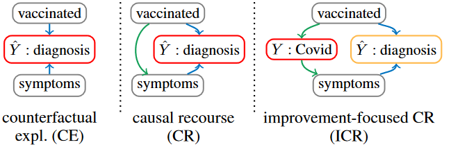
-
Artificial Neural Nets and the Representation of Human Concepts : In this paper, I explore the concepts learned by neural network models trained through supervised learning.
I challenge the widely held assumption that these networks encode known human concepts in individual units.
-
Foundation models in healthcare require rethinking reliability : In this short commentary,
Thomas Grote, Philipp Berens,
and I explore why the standard practice of assessing machine learning model reliability through out-of-sample testing is insufficient for foundation models.
We advocate for the development of a new framework for reliability testing tailored specifically to foundation models.
-
The Intriguing Relation Between Counterfactual Explanations and Adversarial Examples : In this paper, I examine the relationship between counterfactual explanations and adversarial examples,
both of which can be derived by solving the same optimization problem. I argue that the key conceptual distinction lies in the fact that adversarial examples must necessarily be misclassified.
Furthermore, I emphasize that counterfactual explanations achieve their full explanatory potential only when they are positioned as close as possible to the original data point.
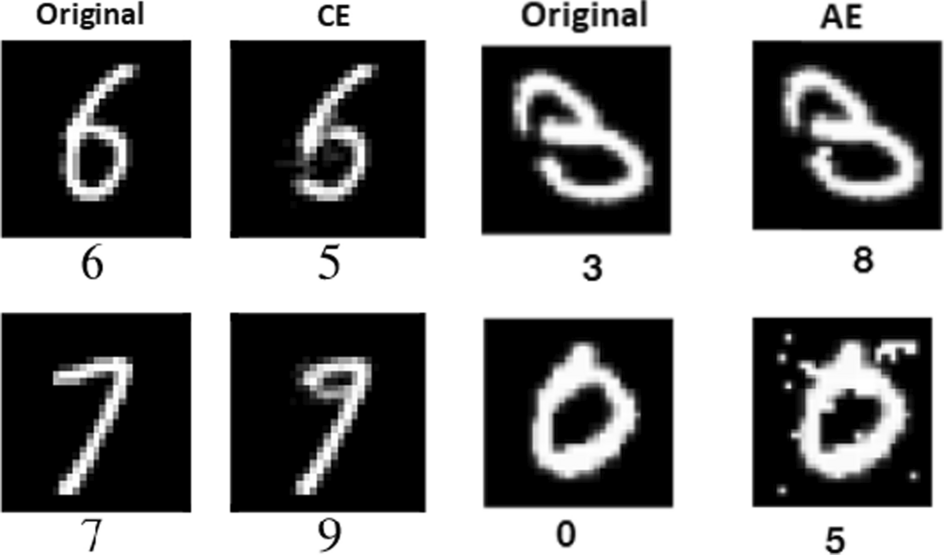
-
General Pitfalls of Model-Agnostic Interpretation Methods for Machine Learning Models : This was a really cool group project initiated by Christoph Molnar,
in which my colleagues and I explored common mistakes that can occur when interpreting machine learning models using model-agnostic interpretation techniques (see table below). In my view, the most significant pitfall is ignoring feature dependencies.
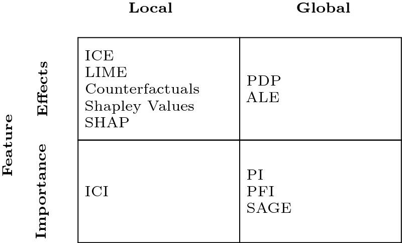
-
CountARFactuals – Generating Plausible Model-Agnostic Counterfactual Explanations with Adversarial Random Forests : In this paper,
Susanne Dandl, Kristin Blesch,
Gunnar König,
Marvin Wright, others, and I introduce an efficient algorithm to generate plausible counterfactual explanations.
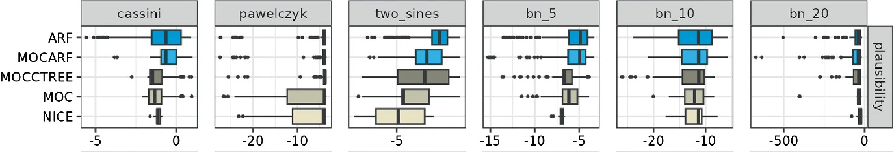
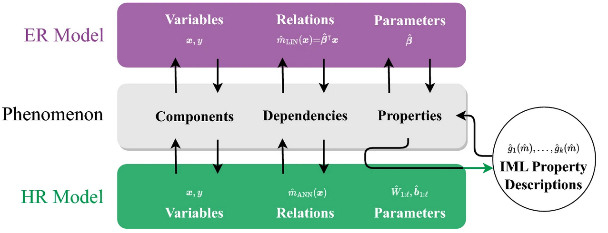
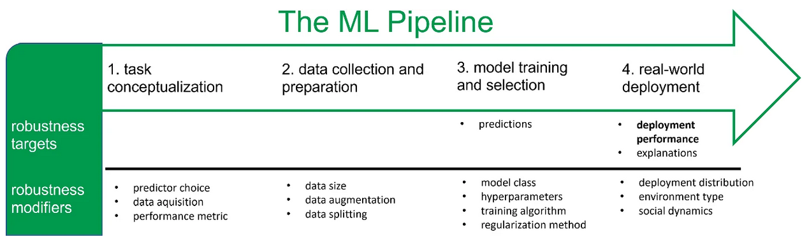
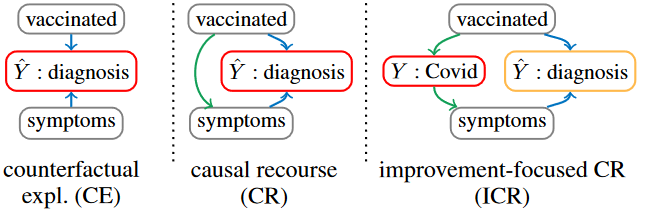
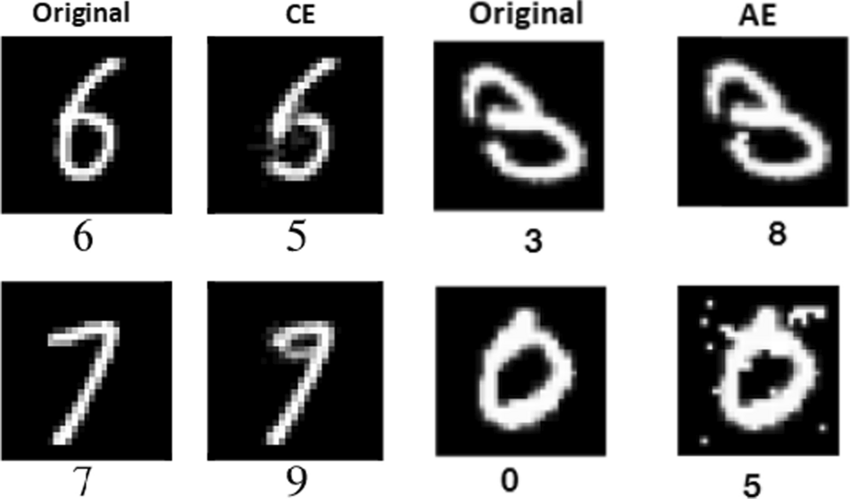
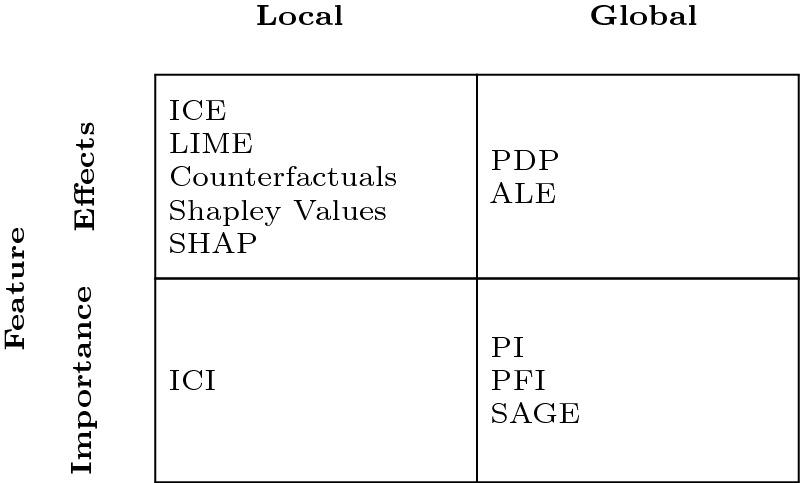
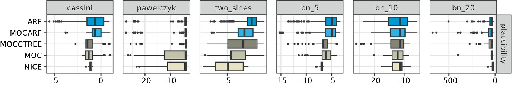
Find me on
google scholar